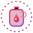
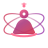
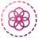
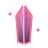
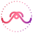

Reconecte sua energia vital ao ritmo do universo.
Em um mundo acelerado, sua mente e seu corpo necessitam de um refúgio de paz e alinhamento bioenergético. Com práticas terapêuticas integrativas, acolho sua trajetória para restaurar o fluxo sutil de vitalidade, leveza e serenidade.

Aromaterapia & Florais Sutis
Sessões Online & Presencial"Assim como o cosmos se equilibra no silêncio entre as estrelas, o nosso ser encontra sua cura quando nos permitimos silenciar, respirar e acolher a nossa essência."
Meu propósito é guiar você em direção a esse ponto de harmonia. Através da escuta atenta e de técnicas integrativas consagradas, abrimos espaço para que sua própria energia vital restaure a paz interior e a clareza mental.
Cuidado que harmoniza todo o seu ser
Somos um campo vivo de energia, mente, corpo e respiração. Nossas práticas dialogam com cada uma dessas esferas.
Harmonia Energética
Desbloqueio de fluxos vitais e alinhamento dos chacras através do Reiki, aliviando sobrecargas e devolvendo serenidade cósmica.

Acolhimento Emocional
Escuta empática e suporte com Florais de Bach para transmutar sentimentos de ansiedade, insegurança e fases de transformação.
Clareza & Meditação
Técnicas de presença e meditação guiada que ensinam a mente a desacelerar e ancorar-se no silêncio do momento presente.
Equilíbrio Sensorial
Aromaterapia sutil e respiração diafragmática para regular o sistema nervoso e desfazer tensões acumuladas no corpo físico.
Atendimentos em Destaque
Conheça as modalidades conduzidas por Aureci Sena. Cada encontro é personalizado para acolher suas necessidades no momento presente.


Presença & Sensibilidade
Aureci Sena • Terapeuta Holística
Aureci Sena
Acredito profundamente que toda pessoa carrega em si a capacidade inata de retornar ao seu centro de harmonia. Na vastidão do universo, o cuidado holístico é a ponte gentil que nos devolve a calma, a respiração plena e o reencontro com quem verdadeiramente somos.
Com formação em práticas integrativas, dedico-me ao estudo contínuo de recursos energéticos, aromáticos e contemplativos que dialogam com a totalidade do ser: mente, corpo, sensibilidade e espírito.
Como funciona a sessão terapêutica?
Se é sua primeira vez buscando práticas integrativas, todo o processo é suave, acolhedor e respeita seu momento.
Primeiro Contato & Escuta
Iniciamos com uma conversa empática para entender seus desafios atuais, sua rotina de vida e o que você busca harmonizar no momento.
Aplicação da Prática
Vivência da modalidade definida (Reiki, Aromaterapia, Meditação ou Florais) em atmosfera silenciosa, serena e respeitosa ao seu ritmo.

Integração & Orientações
Espaço para absorver a experiência, partilhar percepções e receber orientações práticas de autocuidado para os próximos dias.
Fundamentado na ética, no sigilo e no respeito humano
Cada encontro terapêutico é protegido por sigilo absoluto. Não utilizamos promessas milagrosas nem exigências. O trabalho visa apoiar seu reequilíbrio energético e autoconhecimento de forma consciente, sensível e madura.
Perguntas Frequentes
Esclarecimentos diretos sobre agendamento, formatos das sessões e o que esperar.
Reserve um momento para cuidar da sua energia e paz interior.
Dúvidas sobre qual prática é ideal para seu momento atual? Vamos conversar com calma e sem compromisso.